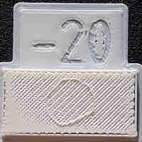
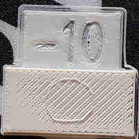
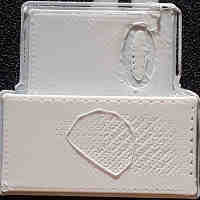
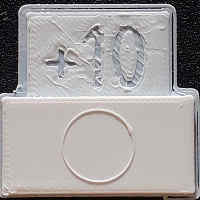
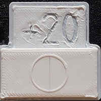
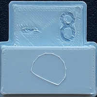
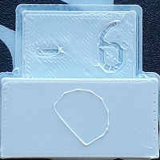
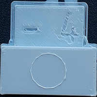
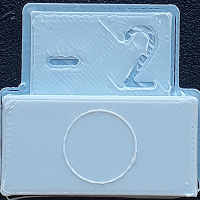
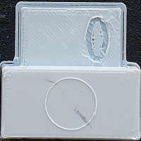

Filamentenfluss-Kalibrierung |
||
|
Sie müssen die Bettnivellierung vor dieser Kalibrierung durchführen. Dieser Test wird fünf Testmuster mit verschiedenen Flussstufen drucken. Sie können den Flussunterschied zwischen den einzelnen Schritten wählen. Sie sollten mit dem 10%-igen beginnen. Nach Überprüfung des Ergebnisses mit Hilfe der untenstehenden Tabelle müssen Sie den Filamentextrusionsmultiplikator in Ihrer Filamentvorgabe ändern (wenn -20 der beste Wert ist, ändern Sie den Multiplikator von 1 auf 0.8, siehe Formel unten). Vergessen Sie nicht, ihn danach zu speichern! Sie können mit dem Schritt von 2,5 fortfahren, wenn Sie etwas mehr Präzision wünschen.
|  |  |  |  |  |
| Nicht flach | Nicht flach | Nicht flach | Flach aber der Kreis ist nicht gut |
Flache Oberfläche und guter Kreis |
Der Fluss, den Sie wählen möchten, ist der niedrigste, der keine Lücken auf der Oberfläche erzeugt. In diesem Beispiel scheint der gute Fluss unter +20 zu liegen. Sie müssen also Ihren Extrusionsmultiplikator auf 1.2 ändern und den zweiten Testsatz drucken (oder auf 1.15 setzen und es dabei belassen).
Schauen Sie nicht auf die Oberflächenqualität des Buchstabens, sie sollte nur beim 0 gut sein, da wir für diesen Fluss die Bett-Höhe kalibriert haben. Hier, wenn Sie mit +20% Fluss gehen, sollten Sie das Bett etwas absenken (die Bett-Nivellierungskalibrierung wiederholen).
|  |  |  |  |  |
| Nicht gut | Nicht gut | Fast gut | Gut, aber der Kreis hat Unregelmäßigkeiten |
Gut |
Hier sehen wir, dass der Kreis bei -8 und -6 nicht sehr gut ist. Das -4 ist fast rund, aber nicht ganz, also zeigt es an, dass die Düse Druck verloren hat. -2 ist fast gut, aber das 0 ist das einzige, das als "gut" betrachtet werden kann, und selbst hier ist der Kreis nicht perfekt.
Sie müssen den Extrusionsmultiplikator für das Filament ändern, für das Sie kalibrieren (und ihn speichern). Formel für den neuen Extrusionsmultiplikator: new_multiplier = ((100 + gewählte_nummer) / 100) * alter_multiplier Beispiel: Erster Schritt, ich wähle das -10, also habe ich ((100-10)/100) * 1 = (0.9) * 1 = 0.9. Zweiter Schritt, ich wähle +5, also habe ich ((100+5)/100) * 0.9 = (1.05) * 0.9 = 0.945.
Wenn Sie diese Änderung dauerhaft machen und Ihren Extrusionsmultiplikator in Slicer auf 1 lassen möchten, können Sie Ihre Firmware-Konfiguration ändern, indem Sie die "Extruder-Geschwindigkeits-Einstellung" (E-Schritt, Schritt-Abstand) um diesen Extrusionsmultiplikator multiplizieren (oder dividieren, je nach Firmware/Einstellung).
Bevor Sie diesen Test durchführen, ist es ratsam, Ihren Extruder zu kalibrieren (es ist einfacher bei einem Bowden-Setup):
Beachten Sie, dass dieser Wert sich ändern kann, wenn Sie den Druck ändern, den der Extruder auf das Filament ausübt.
Es ist sehr schwierig, den Fluss unterhalb des 2%-Markers einzustellen, und kein Filament ist konsistent genug, um dies zu rechtfertigen. Filamente, die eine Garantie von +-0.03 mm haben, weisen eine ~7%ige Variation zwischen dem niedrigen und hohen Querschnitt auf.
Die meisten Kalibrierungen müssen in der richtigen Reihenfolge durchgeführt werden. Diese sollte die zweite sein.
Sie sollten die Bett-Nivellierungskalibrierung möglicherweise wiederholen, wenn das Ergebnis unter 0.9 oder über 1.1 liegt.
Beachten Sie, dass der Filamentextrusionsmultiplikator bei einem anderen Filamentmaterial anders sein kann, da ein weicheres Filament vom Extruder stärker gequetscht/beschnitten werden kann und daher einen kleineren Durchmesser in den Extruderzahnrädern hat.
Beachten Sie, dass der Filamentextrusionsmultiplikator bei einem anderen Filamentmaterial anders sein kann, da ein weicheres Filament vom Extruder stärker gequetscht/beschnitten werden kann und daher einen kleineren Durchmesser in den Extruderzahnrädern hat. Wenn Ihr Drucker-Extruder das Filament "frisst" und die obere Schicht nicht fertigstellen kann, müssen Sie die Bügeleisendistribution erhöhen (in 5%igen Schritten). (Experten-Einstellung, Drucken -> Infill).
Dieser Test setzt die Einstellung "Einzelne Objekte vollständig" auf true, daher sollten Sie möglicherweise Ihre Druckeinstellungen zurücksetzen.
Lizenz für die für diesen Kalibrierungstest verwendeten Modelle: CC BY-SA 3.0